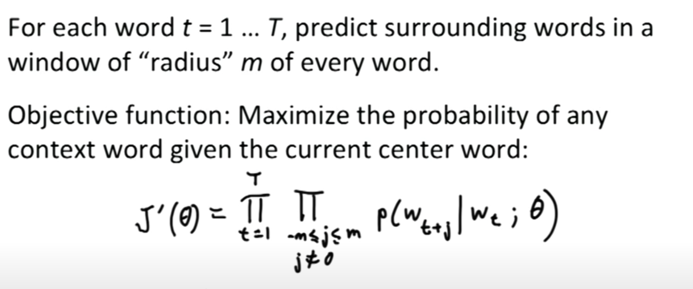
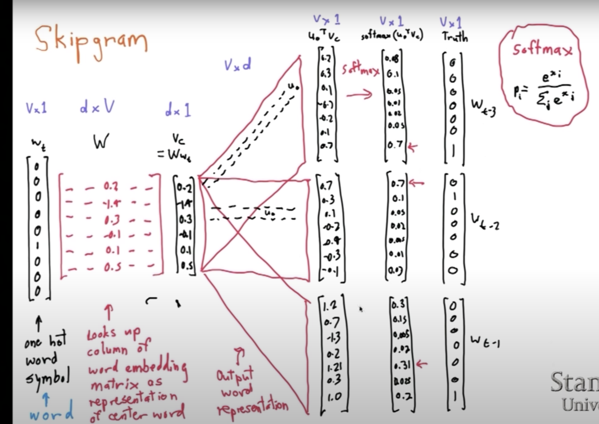

Approach 2: On a Semantic Representation
A second technique that is more involving but conceptually cleaner is the one of using Word2Vec embeddings. This consists in extracting the semantic meaning of a word by looking in which context it appears. I.e. it inspects the "friends" of the word to understand the word itself. This is a nice anthropomorphic way to think about the approach I recently read on a blog, which I particularly enjoyed.
You can get the gist of the idea behind word2vec here.
The mathematical idea is essentially to extract a vector representation for each word based on a 1-layered neural network trained on your corpus of contex-related data.
More concretely you can think about it in the following simplified way: given a N-bag of N-related words around a center word VC represented by a vector, think of a hidden layer of N-nodes (neurons) assigning weights to each of the input N-words such that the probability of observing the N-bag of words given the central word is maximized. Such weights would represent then the vector representation of each word.

The probability is then represented in the most simple case by the softmax funtion of the doct-products of the N-bag of words vectors and the centroid vector.

The weights are obtained by standard backpropagation with a loss function representing the cross entropy between the truth vector and the softmax "probability" vector.
The final architecture is well summarized on the below picture.

For a more in depth analysis of the key mathematical ideas of word2vec the following video is advised:
Interesting is then the choice on how you define the bag of N-words used by the algorithm. A quick introduction to the topic might be found here.
Notice, that the approach not only has the benefit of being theoretically more sound but it also gives the advantage that if the semantic embeddings of your text corpus have been properly inferred via ML algorithms and can be represented in low dimensional space you might start classifying your text corpus based on the geometrical representation of your classes and the text you aim to classify. The idea is that if the text and the class share the same semantical meaning they should lie in some close geometrical subspace. Using some unsupervised algorithm to define such geometrical subspace (or even using some simple metrics) you can then properly classify.